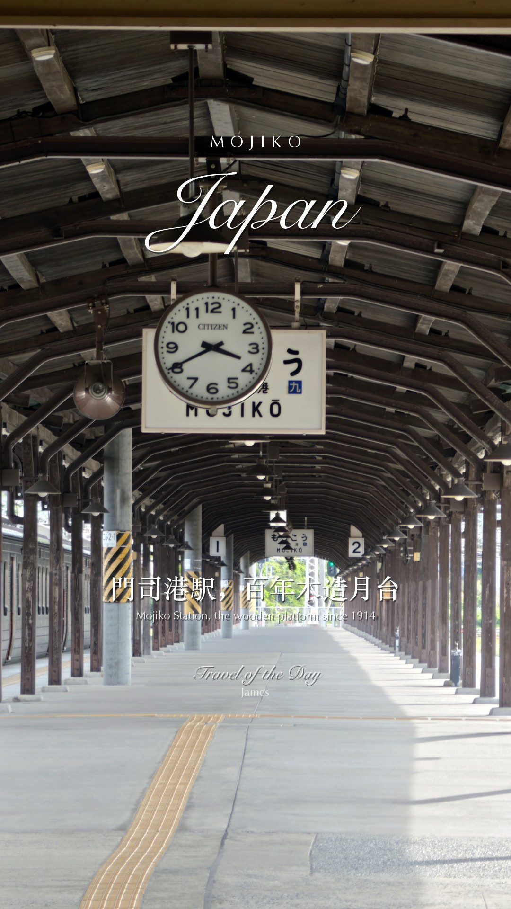
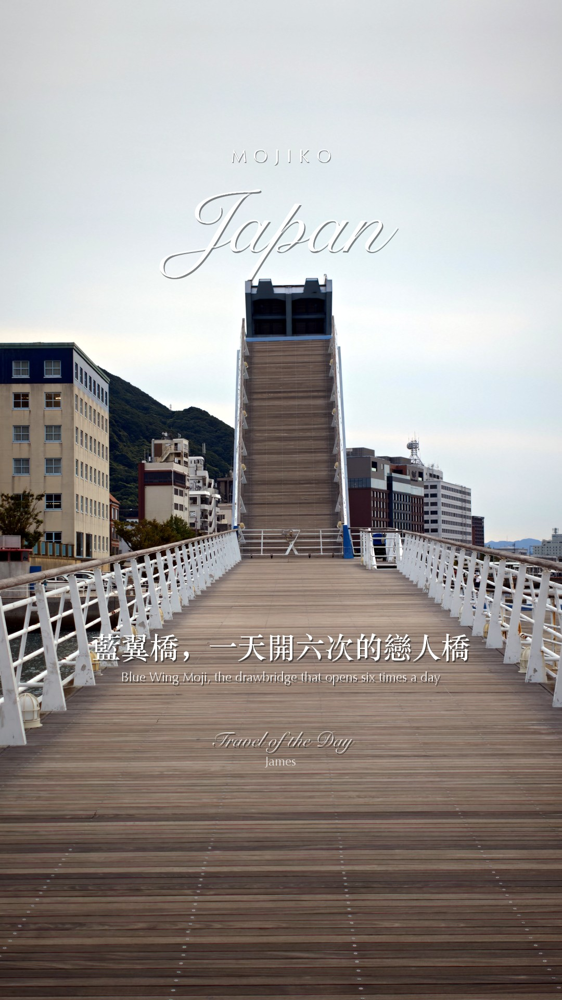
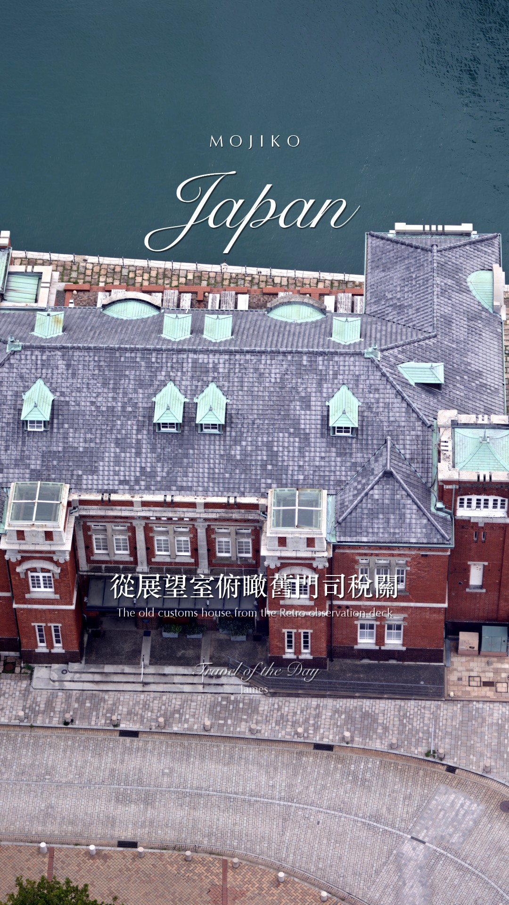

← 回儀表板REEL STUDY · 影片模板拆解
直式卡拍 reel 拆解 Travel of the Day 版型
James 2026-09-22 指定的 IG 旅遊 reel（Lagos, Portugal／@tra_otday）。本頁把它拆成可照做的規格，並記錄我們的套用工具與第一版成果。原片請點 連結看，本頁不轉載對方畫面。
22.5s總長（含 3 秒 CTA）
15顆鏡頭，每顆 1.5 秒＝兩拍
0花俏轉場（全部硬切卡拍）
4層文字（抬頭／字卡／標籤／簽名）
① 節奏與結構
一句話：靠拍點硬切撐節奏，不靠轉場；鏡頭幾乎都是「船 POV 前進、步行 POV、慢推」三種，所以畫面在動、剪接很乾淨。第 1 顆放最強畫面當鉤子，第 8 顆放高潮並掛「必體驗」，倒數三顆用黃昏收情緒，最後一顆回到主題畫面＋CTA。
| # | 秒 | 畫面 | 鏡頭運動 | 它在做什麼 |
|---|
| 1 | 0.0–2.0 | 金色海蝕洞內往外看，船上視角前進 | 船 POV，緩慢前進 | 鉤子：最強畫面放第一顆 |
| 2 | 2.0–3.2 | 洞穴另一角度，浪花打岸 | 船 POV 微晃 | 同場景第二角度，補一拍 |
| 3 | 3.2–4.7 | 崖上小鎮全景，藍海 | 手持微推 | 建立地點 |
| 4 | 4.7–6.2 | 綠色磁磚老屋＋街頭藝人 | 手持定點 | 小鎮生活感、有人 |
| 5 | 6.2–7.7 | 沙灘、男子走過鏡頭 | 手持，人物橫穿 | 人當比例尺 |
| 6 | 7.7–9.2 | 海崖步道往下走 | 步行 POV | 過場、帶動線 |
| 7 | 9.2–10.7 | 海蝕拱門與倒影 | 定點微推 | 地標 |
| 8 | 10.7–12.1 | 船駛入洞穴 | 船 POV 前進 | 高潮＋『必體驗』標籤 |
| 9 | 12.1–13.7 | 白色海崖、綠色海水 | 船側拍平移 | 色彩對比最強的一顆 |
| 10 | 13.7–15.1 | 木棧道往海灘 | 步行 POV 往下 | 動線＋療癒感 |
| 11 | 15.1–16.6 | 岬角海蝕柱全景 | 緩推 | 景觀高點 |
| 12 | 16.6–18.1 | 夕陽金色海灘 | 定點 | 情緒轉折：黃昏 |
| 13 | 18.1–19.6 | 粉紫暮色沙灘 | 定點 | 收尾情緒 |
| 14 | 19.6–20.8 | 崖上看海灘／洞中看海 | 定點 | 回到洞穴主題 |
| 15 | 20.8–22.6 | 洞穴天窗仰望＋CTA 字卡＋圓頭像 | 定點 | 結尾：追蹤＋留言關鍵字 |
② 文字系統（四層）
- 地名整版（全程固定）：城市小型大寫、字距拉寬（LAGOS）＋國家細草書大字（Portugal），畫面上 1/4 置中，白字微陰影。
- 口播字卡（每 3–5 秒換）：中文宋體一行＋底下極小英文，畫面下 1/3；淡入淡出約 0.4 秒。
- 手寫推薦標籤：毛筆感「必體驗」、微傾斜、兩側撇畫，只在高潮鏡頭出現 3 秒，放在字卡正上方。
- 簽名（全程固定）：「Travel of the Day」草書＋作者名，右下，透明度較低。
| 秒 | 字卡文案（原片） |
|---|
| 0.0–4.7 | 歐洲隱藏版最美海景秘境 |
| 4.7–9.2 | 就在葡萄牙南部—Lagos |
| 9.2–10.7 | 湛藍海景步道與海蝕洞 |
| 10.7–13.7 | 搭船繞進海崖 金色洞穴就在眼前 ＋手寫『必體驗』 |
| 13.7–18.1 | 沿著海景步道 步步都是療癒 |
| 18.1–20.0 | 一生一定要看一次的魔幻夕陽 |
| 20.0–20.8 | 喜歡質感慢旅的你 會愛上這裡 |
| 20.8–22.6 | 追蹤＋留言『拉各斯』景點攻略懶人包傳給你 |
💡 小貼士：文案句型＝「地點定位 → 怎麼玩 → 情緒收尾 → CTA」。前兩句要在 9 秒內講完「哪裡＋為什麼」；CTA 一定給一個留言關鍵字（城市名），這是它拿留言互動的方法。
③ 色調與聲音
- 色調：偏暖、飽和、高光稍微過曝的度假感；藍綠色的海刻意拉飽和跟金色崖壁對比。跟我們的都市冷調（JL 拆解）是相反方向，海島／港町素材適用。
- 配樂：慢速流行抒情（IG 頁面標示為 Bruno Mars 曲目；抓下來的音軌由語音辨識聽到的歌詞像 JP Saxe《If the World Was Ending》，兩者不一致，以 IG 標示為準）。重點不在哪首歌，在兩拍一刀。
- 結尾：CTA 3 秒＋圓形頭像（作者在花磚前的照片），音樂同時淡出。
④ 我們的套用：reel_tod.py
一支設定檔驅動的產生器：給 15 顆片段起點、BPM、五句中英字卡、標籤要掛在哪幾顆、簽名與 CTA，就出片。O-Log2 自動套官方 LUT，橫式自動裁 9:16。



上：用門司港 day4 照片做的版型示意（草書 Snell Roundhand、小型大寫 Optima、宋體、行楷「必體驗」，全是 Mac 內建字體）。
- 第一版：門司港 15 顆＋cherry-blossoms 78 BPM（兩拍＝1.53 秒）＋CTA，26 秒，2026-09-22 已交 James。
- 文字圖層規矩：這版先用程式疊（G 系列）。要走 FCP 內建 title（T 系列）需在 FCP 用草書字體做一次範本匯出 .fcpxmld，之後就能量產。
- 下一步：James 回饋文案／鏡頭／暖度／簽名名字；把版型加進圖層總目錄；配套「必體驗」標籤做成可換字的圖層。
💡 套用其他 trip 的順序：① 從 ir_tag 的「建議HL」挑 15 顆直式（不夠用橫式裁）② 配樂選擇器挑 70–90 BPM、走勢「平均」的曲 ③ 寫五句字卡（地點→怎麼玩→情緒→CTA）④ 高潮那顆掛「必體驗」⑤ 出片後抽 3 格檢查文字有沒有出來。